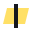

PRISM logo: every attempt
From a plain wordmark to the animated Flagged I, oldest first. Yellow dots are what is on the site now.
-
Before 17 Oct
Plain wordmark Replaced
PRISM in Public Sans 600, no mark and no favicon. Clean, but it had no character, which started the brainstorm.
PRISMPublic Sans 600, ink -
17 Oct
Brainstorm: six concepts Explored
Each mark was drawn to work at 16px and in one colour, then checked online for look-alikes. Two came out on top: Pilcrow P and Flagged I.
-
Facet P
A P whose bowl is a cut glass facet, set apart from the stem.
Similarity risk: medium Geometric P monograms are common; the first triangle bowl looked like stock "flag P" logos and Prisma, so it was reshaped.
-
Caret
The proofreader's insertion caret on a broken line of text: a prism without its base.
Similarity risk: medium Alone it reads as an up-chevron; the broken baseline keeps it a proof mark.
-
Flagged I Picked
The I in PRISM gets the highlighter swipe the studio puts on flagged words.
Similarity risk: low No brand found built on a single highlighted I.
-
Dele P
A one-stroke P whose stem ends in the editor's looped "delete" mark.
Similarity risk: medium Script P marks (e.g. Pinterest) are the nearest; this has no circle.
-
Readings
One line meets a lens and leaves as five lines of text: one handout, five frameworks.
Similarity risk: low Same light-splitting idea as Prisma Health and the Pink Floyd prism, but no triangle or spectrum.
-
Pilcrow P
The P drawn as a reversed pilcrow, the "show formatting" mark.
Similarity risk: medium Penguin Press's PP uses a similar reversed-pilcrow idea; the heavy solid bowl keeps it apart.
-
Score sheet Dropped
A ruled sheet with a margin and a tick.
Similarity risk: high Couldn't be told apart from Google Forms, Microsoft Forms and stock form icons. Replaced by Dele P.
-
-
18 Oct
Flagged I chosen; yellow becomes the theme colour Live
The I in PRISM sits on a slanted highlighter swipe, the same yellow that marks flagged words in the studio. The swipe's slant is the logo's own, so it can't be mistaken for a real flag. The favicon is the I alone on the swipe.

Wordmark and favicon -
19 Oct
First animation: Swipe Replaced
The swipe drew across the I like a highlighter stroke, on page load and hover (0.6 s).
-
19 Oct
Five animations compared
- 1 Swipe
- 2 Scan
- 3 Stamp
- 4 Type-on
- 5 Prism fan
-
19 Oct
Scan chosen Live
A thin yellow reading line sweeps across the word and leaves the I highlighted: the tool checking a line (1.2 s). It plays on page load and hover. Hover the logo below to replay it.
Hover to replay -
21 Oct
Front door opening On localhost, not pushed
The front door opens with the logo large in the middle playing its Scan, then it shrinks and glides into the top-left corner while the page rises in.